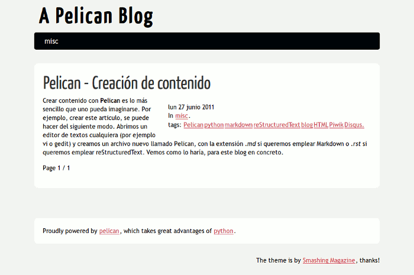

Crear contenido con Pelican es lo más sencillo que uno pueda imaginarse. Por ejemplo, crear este articulo, se puede hacer del siguiente modo. Abrimos un editor de textos cualquiera (por ejemplo vi o gedit) y creamos un archivo nuevo llamado Pelican, con la extensión .md si queremos emplear Markdown o .rst si queremos emplear reStructuredText. Vemos como lo haría, para este blog en concreto. Este sería el texto para crearlo en formato reStructuredText:
Pelican - Creación de contenido ############################### :tags: Pelican, python, markdown, reStructuredText, blog, HTML. Crear contenido con **Pelican** es lo más sencillo que uno pueda imaginarse. Por ejemplo, crear este articulo, se puede hacer del siguiente modo. Abrimos un editor de textos cualquiera (por ejemplo vi o gedit) y creamos un archivo nuevo llamado Pelican, con la extensión *.md* si queremos emplear Markdown o *.rst* si queremos emplear reStructuredText.
Y este el que usaría para crearlo en markdown, que es el que yo empleo:
title: Pelican - Creación de contenido tags: Pelican, python, markdown, reStructuredText, blog, HTML, Piwik, Disqus. Crear contenido con **Pelican** es lo más sencillo que uno pueda imaginarse. Por ejemplo, crear este articulo, se puede hacer del siguiente modo. Abrimos un editor de textos cualquiera (por ejemplo vi o gedit) y creamos un archivo nuevo llamado Pelican, con la extensión *.md* si queremos emplear Markdown o *.rst* si queremos emplear reStructuredText. Vemos como lo haría, para este blog en concreto.
Ahora solo tendríamos que guardar este fichero en la carpeta raíz de nuestro contenido y ejecutar Pelican para generar la página web resultante. Así de sencillo. Por ejemplo, creamos una carpeta prueba dentro de la estructura de ficheros que habíamos creado en el articulo anterior (myblog.com/) y guardamos allí este fichero. Ahora ejecutamos pelican dentro del entorno virtual y nos creara una carpeta output donde como resultado tendremos un blog por defecto creado como por arte de magia. Es decir, hacemos esto:
$ mkdir prueba $ vi prueba/pelican.md $ source env/bin/activate $ pelican prueba/ $ ls env output pelican prueba site temp $ firefox output/index.html
y obtenemos esto:

Estructura del articulo
En el ejemplo anterior lo único que varía entre ambos formatos (aparte de la
sintaxis) es la cabecera del mismo. En la cabecera se incluye el titulo del
mismo (no tiene porque coincidir con el nombre del fichero) y los metadatos. El
titulo en reStructuredText va subrayado con símbolos # y en markdown es un
metadato más. Excepto el título, todos los metadatos son opcionales. Los
metadatos en .rst van precedidos de dos puntos :. Después de los metadatos
es suficiente con dejar una linea en blanco para comenzar a redactar el
contenido de nuestro articulo.
Los metadatos que se pueden incorporar son los siguientes:
-
title (solo como metadato en markdown): Es el titulo del artículo o página.
-
date: Es la fecha y hora de publicación. Si no se indica, tomara como tal los valores del propio fichero de texto. El formato es el siguiente: año-mes-dia hora:minutos, es decir,
%Y-%m-%d %H:%M -
category: La categoría en la que queremos englobar el articulo. Si no se especifica, puede coger la categoría por defecto que se haya especificado en el fichero de configuración si así se ha establecido (por defecto es misc). Otra forma aún más simple, es crear un directorio dentro de nuestro directorio de contenido y colgar los archivos dentro de él. Todos los que se encuentren dentro de ese directorio caerán en la categoría que coincida con el nombre del mismo. Así es como yo lo hago, con un directorio llamado blog, es idoneo para organizar el contenido.
En el tema por defecto, las categorías se añaden como una entrada al menú superior que al ser seleccionada, muestra todos los artículos englobados dentro de ella.
-
author / authors: El autor(es) del articulo. Si se omite, escoge por defecto el que se haya establecido en el fichero de configuración. Yo lo omito, pero puede ser muy útil para blogs escritos por varios autores.
-
tags: Las etiquetas con las que etiquetamos a nuestro articulo. El tema por defecto solo nos permite seleccionar una y ver todos los artículos etiquetados de igual modo, pero es bastante sencillo crear una nube de etiquetas como la que empleo en este blog.
-
summary: Es el resumen que queremos que se vea del articulo cuando se emplea la paginación. Por defecto, si no se especifica este campo, los artículos se resumen con las primeras 50 palabras del mismo.
-
slug: Esta es uno de los campos más curiosos, pero al mismo tiempo más geniales. Este campo es el nexo que nos permite enlazar varias versiones del mismo articulo en distintos idiomas. En el tema por defecto, nos muestra las distintas traducciones de un articulo, si es que existen.
-
status: Esta es un campo especial que solo admite dos valores,
draft(borrador) ypublished(publicado). Cualquier otro valor es ignorado. Si el valor esdraft, el articulo o pagina no aparece publicado ni referenciado de algún modo al generar el contenido, y solo está disponible si accedemos a él a través del directorio drafts/. Esto es una ayuda para evitar que por un descuido subamos a la web un articulo sin terminar. Yo no lo empleo, ya veremos cuando hable de le automatización, como he resuelto este posible problema de otro modo. Si lo empleamos, deberíamos añadir el directorio drafts/ a nuestro fichero robots.txt comoDisallowpara que no fuera indexado por los buscadores (de poco importaría ocultar el el borrador si lo haces accesible a través del buscador).
Para comprender el resto de opciones disponibles para crear el contenido, voy a centrarme en el sitio de ejemplo que viene por defecto con Pelican. Empezaremos eliminando las pruebas que acabamos de realizar.
$ rm -r output/ $ rm -r prueba/ $ ls env pelican site
Estructura del contenido del ejemplo
Ahora, en el directorio de contenido del sitio de ejemplo, tenemos la siguiente estructura de ficheros:
$ cd site/ $ tree source/ source/ ├── another_super_article-fr.rst ├── another_super_article.rst ├── cat1 │ ├── article1.rst │ ├── article2.rst │ ├── article3.rst │ └── markdown-article.md ├── draft_article.rst ├── extra │ └── robots.txt ├── pages │ └── test_page.rst ├── pictures │ ├── Fat_Cat.jpg │ ├── Sushi.jpg │ └── Sushi_Macro.jpg ├── super_article.rst ├── unbelievable.rst └── unwanted_file
Donde:
-
another_super_article-fr.rst y another_super_article.rst son dos versiones del mismo articulo en inglés y francés. Aunque cuelgan del directorio raíz, ambos están englobados dentro del sitio en la categoría bar a través del metadato category y enlazados traducciones mediante el metadato slug
:slug: oh-yeah -
draft_article.rst es un articulo que no aparece publicado en el sitio de ejemplo al estar marcado como borrador con el metadato status, pero al que podemos acceder igualmente a través de
myblog.com/site/source/drafts/a-draft-article.html -
super_article.rst y unbelievable.rst son ejemplos de uso de metadados. El primero es un articulo que cuelga de la categoría yeah y que sirve como ejemplo del empleo de summary y del uso de imágenes y código. El segundo es un ejemplo de articulo sin más metadatos que la fecha del mismo y de como cae en la categoría misc por defecto.
-
unwanted_file es un articulo que no se procesa de ningún modo por carecer de extensión que lo identifique como markdown o reStructuredText. Como consecuencia este fichero ni siquiera se copia al sitio web generado. Puede ser un truco útil para emplearlo como fichero de notas personales de cualquier tipo, por ejemplo un recordatorio de como hemos definido la estructura de archivos, una chuleta como usar marcado o reStructuredText, artículos pendientes, ...
-
cat1 Este directorio es un ejemplo de como todos los artículos que cuelgan de él son englobados dentro de la categoría cat1 de forma automática. Esto nos evita escribir el metadato category en cada uno de ellos y nos ayuda a clasificarlos en el directorio. Y nos muestra como se pueden mezclar archivos markdown y reStructuredText sin ningún tipo de problemas.
-
extra En esta carpeta (puede ser otra, es configurable) englobamos archivos que queremos incluir en el sitio, pero que no han de ser procesados. Como por ejemplo: .htaccess, .robots.txt, .humans.txt, ... Esto puede cambiarse en el fichero de configuración, especificando el origen dentro del directorio de nuestro contenido y la ruta en la que queremos que esté en el sitio web. En este caso, sería así en el fichero de configuración
pelican.conf.pyFILES_TO_COPY = (('extra/robots.txt', 'robots.txt'),)
-
pages Serían las páginas estáticas del sitio, lo que no son artículos. Este nombre de directorio está reservado para esta función por defecto. Por ejemplo la página markdown que empleo en este blog, sería una de estas páginas estáticas. En estas páginas no están disponibles los comentarios. Si se especifica en el fichero de configuración, estas páginas aparecerán como entradas en el menú principal del tema por defecto.
-
pictures Este es uno de los directorios que se pueden emplear para albergar contenido estático como son las imágenes. Esto es configurable en el fichero de configuración. En este caso lo que se guardan en el son las imágenes empleadas en los artículos. Estas acabaran dentro del directorio
static/pictures/de nuestro sitio.
Y ya está, es una estructura muy sencilla y que genera un resultado bastante decente, comparado con los cientos de archivos que emplea (a parte de la BDD) cualquier CMS como Wordpress o Drupal.
Si partiéramos de un blog ya creado, Pelican proporciona una herramienta, que en nuestro caso estaría en /myblog.com/pelican/tools/importer.py y que nos permite importar artículos desde Wordpress o desde un fichero RSS y que nos genera los contenidos en reStructuredText. Si quisiéramos emplear markdown, existe una herramienta externa, html2markdown que nos permite obtener un texto en markdown desde una página web. Otra herramienta similar a esta última sería html2text.
No tiene más secreto que este, crear ficheros de texto plano en formato .md o .rst, guardarlos en el directorio que empleamos para albergar el contenido y generar el blog.